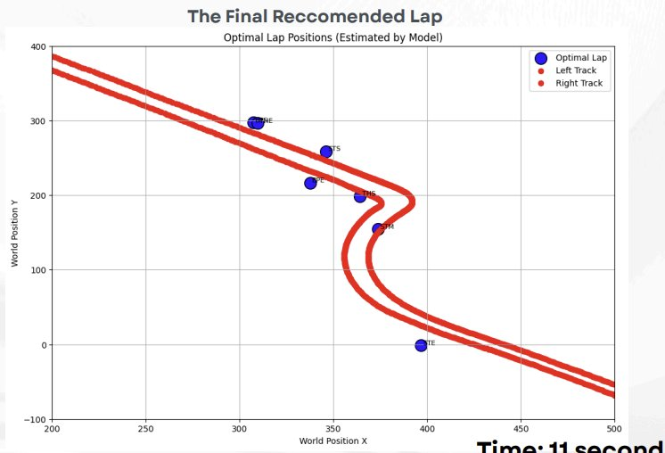

01 — Business Problem
What separates tenths of a second in elite motorsport?
In Formula 1, the margin between a podium and a midfield finish can come down to driver technique through a single corner complex. At the 2025 Australian Grand Prix, telemetry showed that the gap between Ferrari and McLaren through the Turns 1–2 chicane at Albert Park was enough to influence the race outcome.
Despite this, sim racing teams — who generate enormous volumes of telemetry data — lack rigorous, data-driven frameworks for coaching drivers on corner technique. Can machine learning on simulator data prescribe optimal driver inputs?
Objective: Determine the optimal combination of driver trigger points — braking, steering, and throttle — through the Turns 1–2 chicane to maximize exit speed and minimize chicane time.
02 — Data & Cleaning
From raw telemetry frames to one row per lap
The raw simulator output is frame-level telemetry — one record every few milliseconds, capturing position, speed, inputs, and vehicle state continuously around the lap. Before any modelling could occur, this had to be transformed into a structured, lap-level dataset through a four-stage pipeline.
Stage 1 — Filtering. Only Melbourne laps with valid racing status were retained. Laps with fewer than 500 distinct position points were dropped as glitched or stuttery. Rows with missing X/Y coordinates were removed, leaving a clean set of complete, driveable laps.
Stage 2 — Spatial enforcement. Track boundary CSVs (left and right limits) were loaded and used to construct a Shapely polygon of the T1–T2 sector. Any lap containing even a single telemetry point more than 5 metres outside this polygon was removed entirely — catching off-track excursions that would otherwise corrupt corner technique analysis.
Stage 3 — Feature engineering. Velocity (X/Y/Z) and G-forces were recomputed from position deltas since raw simulator values contained unrealistic outliers — values beyond ±7G were masked and interpolated per lap. Three angular features were engineered to capture driver technique: front wheel vs velocity angle (understeer/slip), car direction vs velocity angle (oversteer/drift), and front wheel vs car direction angle (steering aggression). Racing line deviation was computed at every frame via KD-tree nearest-neighbour distance to a reference line. Brake temperature balance (front/rear and left/right differentials) was also computed.
Stage 4 — Lap aggregation & trigger point extraction. Frame-level data was collapsed to one row per lap by identifying seven key trigger moments and snapshotting eight variables at each: speed, throttle, brake, steering angle, lap time, lap distance, and world X/Y position. This produced the 1,032-lap, 255-feature dataset used for modelling.
Modelling-side cleaning reduced the 255 features to 57 by retaining only driver-controlled inputs — explicitly excluding vehicle dynamics outputs like yaw, pitch, roll, apex distances, and racing line deviation, which reflect car response rather than driver intent.
A critical labelling error was uncovered during EDA. The Throttle End (THE) and Throttle Start (THS) variables had been swapped in the source dataset — confirmed across six independent variables. Domain-informed validation like this is what prevents models from learning entirely the wrong signal.
Outlier removal used a combinatorial search. All 128 combinations of which trigger-point prefixes to IQR-filter were evaluated exhaustively — selecting the subset that minimised MSE per model. SVR benefited from filtering BPS, STM, STE, and THS; KNN from STM, STE, and THS. Rows with remaining null values were dropped rather than imputed, to avoid conflating poor laps with strong ones.
Swapped variable evidence
| Variable | Expected | Observed |
|---|---|---|
| Speed | THS < THE | THS > THE ✗ |
| Lap distance | THS > THE | THS < THE ✗ |
| Throttle | THS < THE | THS > THE ✗ |
| Brake | THS > THE | THS < THE ✗ |
| Steer angle | THS > THE | THS < THE ✗ |
03 — Modelling
Seven models. One clear winner.
Lap time prediction is inherently non-linear — small changes in braking point cascade into corner entry speed, steering angle, and throttle timing. We evaluated a full progression from interpretable baselines to complex ensemble methods.
| Model | RMSE (ms) | Adj. R² | MAE (ms) |
|---|---|---|---|
| Linear Regression | 1,707.5 | 0.325 | 982.5 |
| Elastic Net | 1,409.6 | 0.540 | 879.4 |
| KNN Regressor | 468.6 | 0.037 | 312.1 |
| Random Forest | 341.3 | 0.818 | 192.6 |
| LightGBM | 265.9 | 0.679 | 166.6 |
| XGBoost | 189.7 | 0.856 | 127.3 |
| Support Vector Regression Selected | 98.6 | 0.924 | 75.7 |
SVR with a linear kernel (C=1000, ε=100) outperformed all models by a clear margin — and the linear kernel result was itself notable. It suggests the relationship between correctly-engineered trigger-point features and lap time is approximately linear, once noisy and mislabelled features are resolved.
Key insight: Removing upper-IQR outliers from specific CURRENTLAPTIMEINMS prefixes improved SVR's adjusted R² from –1.36 to 0.924. Data quality work delivered more lift than hyperparameter tuning.
04 — Feature Importance
What actually drives chicane time?
SVR coefficient magnitudes reveal which moments are most predictive of final lap time. The results are consistent with motorsport intuition — exit phase behaviour dominates, not peak braking performance.
The Steer End (STE) moment — steering wheel returning to neutral after Turn 2 — is the single strongest predictor. This captures how well the driver has set up for the acceleration zone into Turn 3. Braking features matter less in isolation; it's the downstream consequences of those decisions that determine lap time.
05 — Optimization
Finding the optimal lap
With SVR validated, SciPy's differential_evolution
was used to find the global minimum — the combination of driver inputs that minimizes
predicted chicane time. Early attempts produced impossible lap times (0.2 seconds).
The final approach bounded each feature to its 25th–75th percentile range, and a KNN
plausibility check confirmed the result closely matched real laps in the dataset.
Optimal trigger point positions vs. closest real lap (Albert Park T1–T2)

| Trigger | Speed | Time | Action |
|---|---|---|---|
| 1BPS / THE | 319 km/h | 2,897–3,118 ms | Begin braking; lift off throttle |
| 2STS | 274 km/h | 3,760 ms | Initiate steering into Turn 1 |
| 3BPE / THS | 152–172 km/h | 3,714–4,429 ms | Release brake; begin throttle re-application |
| 4STM | 175 km/h | 5,616 ms | Steering midpoint through Turn 2 |
| 5STE | 241 km/h | 8,284 ms | Steering neutral; full acceleration |
Target chicane time: 11,266.63 ms (~11.27 seconds). Verified against real laps using KNN — feature differences were minor across all variables, confirming the recommendation is physically achievable.
06 — Key Findings
What this means for driver coaching
Exit phase dominates
STE features are the strongest predictors. How a driver exits the corner matters more than how they enter it.
Early throttle is critical
Throttle re-application at ~152 km/h directly correlates with higher exit speed into the Turn 3 straight.
Tight braking zone
Optimal braking sits within a 2m window at 249–275m lap distance — a concrete, actionable coaching reference.
07 — Limitations & Reflections
What we'd do differently
- Aggregated features only. Models learned from trigger-point summaries, not continuous telemetry. A driver can reach optimal trigger points via a suboptimal path — continuous data would enable richer modelling.
- No session context. Tyre wear, fuel load, and track temperature all influence real-world performance. The model captures behavioural technique only.
- Optimization bound sensitivity. Differential evolution bounds were found by trial and error. A physics-informed or constraint-based approach would improve reproducibility.
- Feature engineering dependency. All features were pre-engineered by a separate team. Reliability of insights depends on upstream engineering quality — a reminder that data pipelines are foundational.